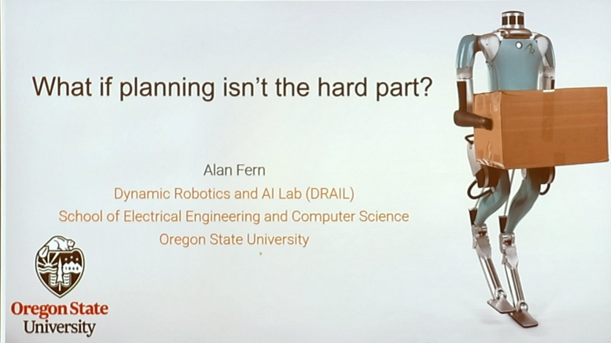
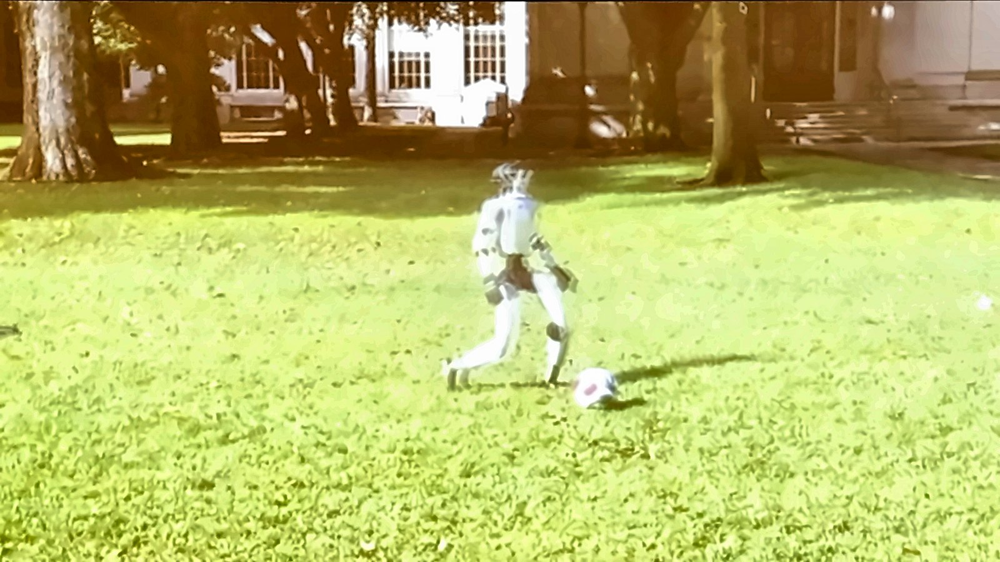
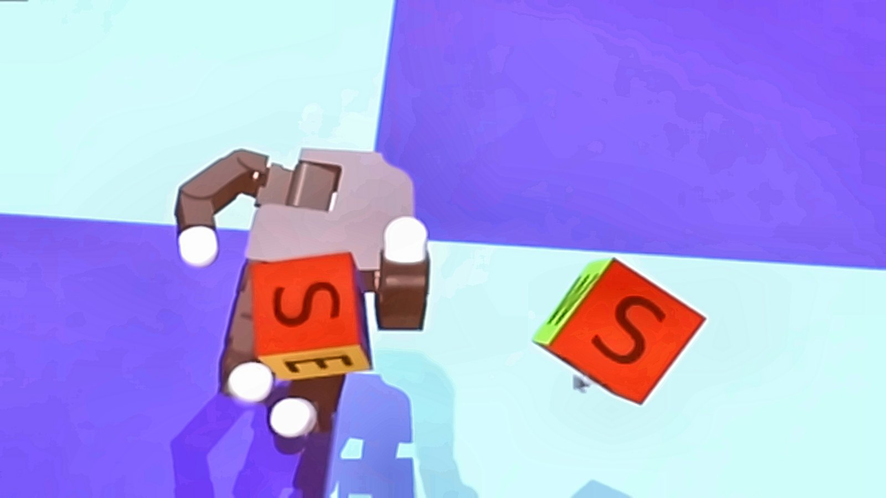
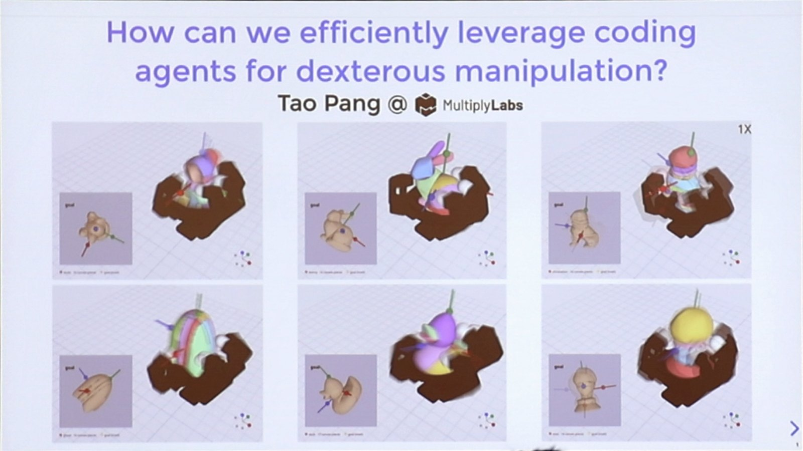

Contact-mode decision making
Robots must decide when to grasp, push, drag, brace, lean, pin, wedge, pivot, or exploit the environment, and how to transition between those strategies under uncertainty.
CoRL 2026 Workshop
How should robots choose, sense, and control contact while moving through the world?
November 12, 20262:00–6:00 PM CST
JW Marriott Austin
Recent advances in robot learning, control, perception, and planning have enabled mobile robots to navigate complex environments and interact more capably with the physical world. Legged robots, humanoids, and mobile manipulators now perform tasks that require whole-body motion, forceful interaction, and adaptation under uncertainty.
Many real-world loco-manipulation problems cannot be solved by grasping alone. Robots must combine prehensile skills, such as grasping and carrying, with non-prehensile skills, such as pushing, dragging, pivoting, bracing, or using sustained body-object contact. The contact strategy is directly coupled to locomotion, balance, onboard sensing, planning, and whole-body control.
This workshop brings together researchers in legged locomotion, mobile manipulation, non-prehensile manipulation, whole-body control, contact-aware planning, onboard perception, and sim-to-real transfer to identify shared challenges and promising research directions.
Robots must decide when to grasp, push, drag, brace, lean, pin, wedge, pivot, or exploit the environment, and how to transition between those strategies under uncertainty.
Contacts involving a robot's arms, legs, torso, or base, as well as objects and the environment, affect balance, mobility, force regulation, and task success.
Robots must act despite uncertainty in friction, mass, compliance, center of mass, contact location, slip, object geometry, terrain, and other hidden state.
The field needs principles and representations that transfer across fixed-base arms, mobile manipulators, quadrupeds with arms, humanoids, soft robots, and dexterous hands.
Progress requires shared task families, metrics, simulation assets, and real-world protocols that capture robustness, safety, recoverability, contact efficiency, and generalization.

Watch the talk · 27:41
Watch the talk · 27:42
Watch the talk · 35:39
Watch the talk · 23:13Presented by
Four invited talks will frame the central open problems and leave time for direct Q&A on contact-mode selection, whole-body coordination, and uncertainty.
Four selected papers will be introduced through five-minute spotlight talks. Accepted workshop papers will be discussed in an interactive poster session.
A moderated panel will bring together speakers, authors, and attendees, with key open problems and research directions summarized in a post-workshop report.
Thank you for joining us
JW Marriott Austin · November 12, 2026